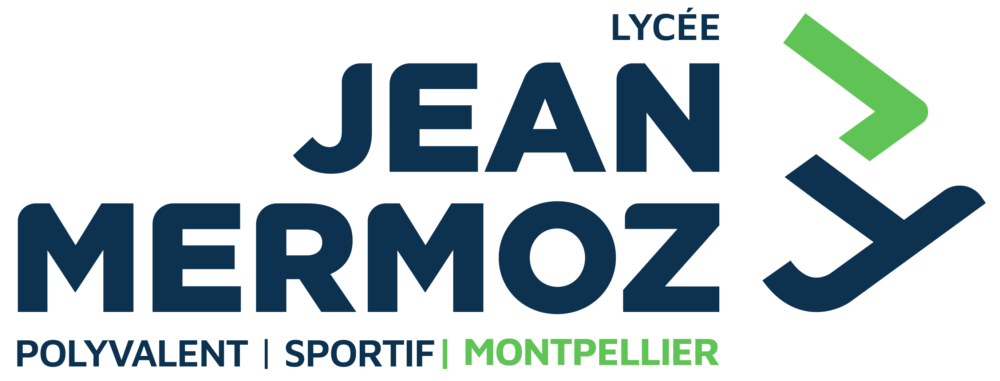
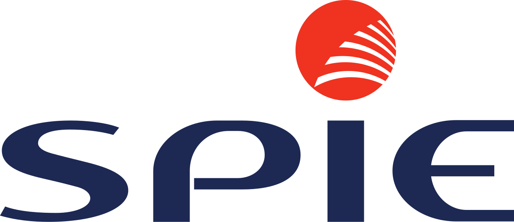
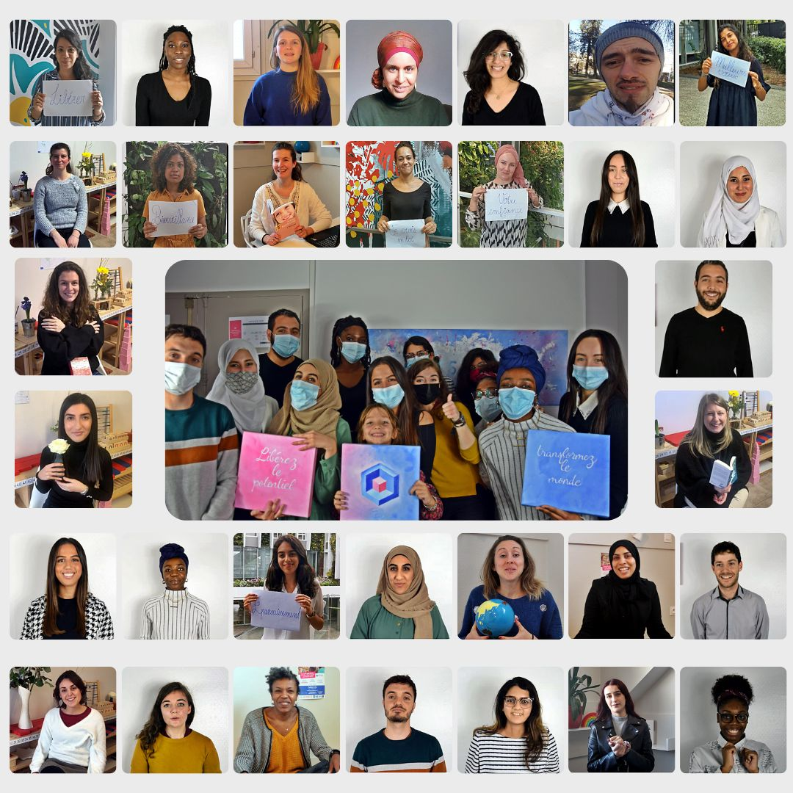
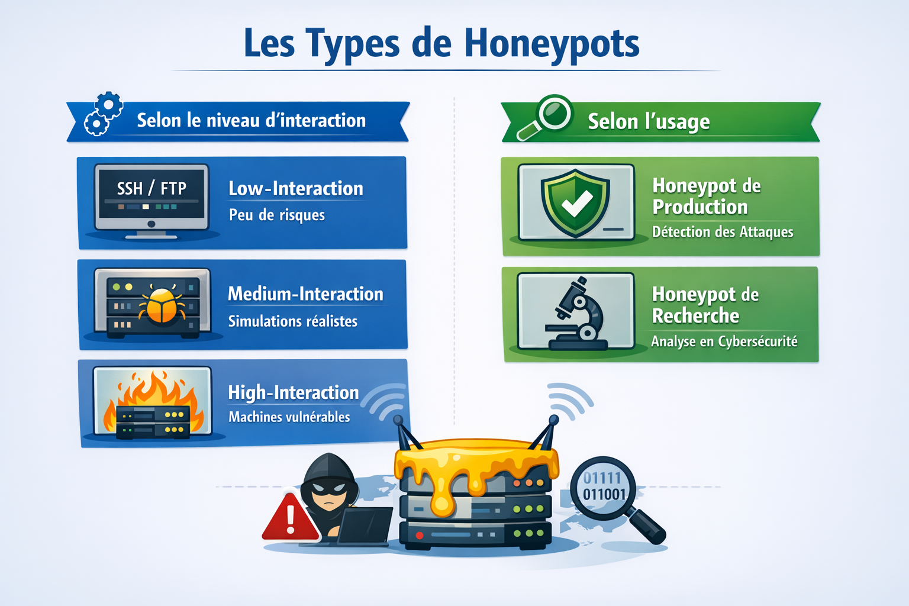
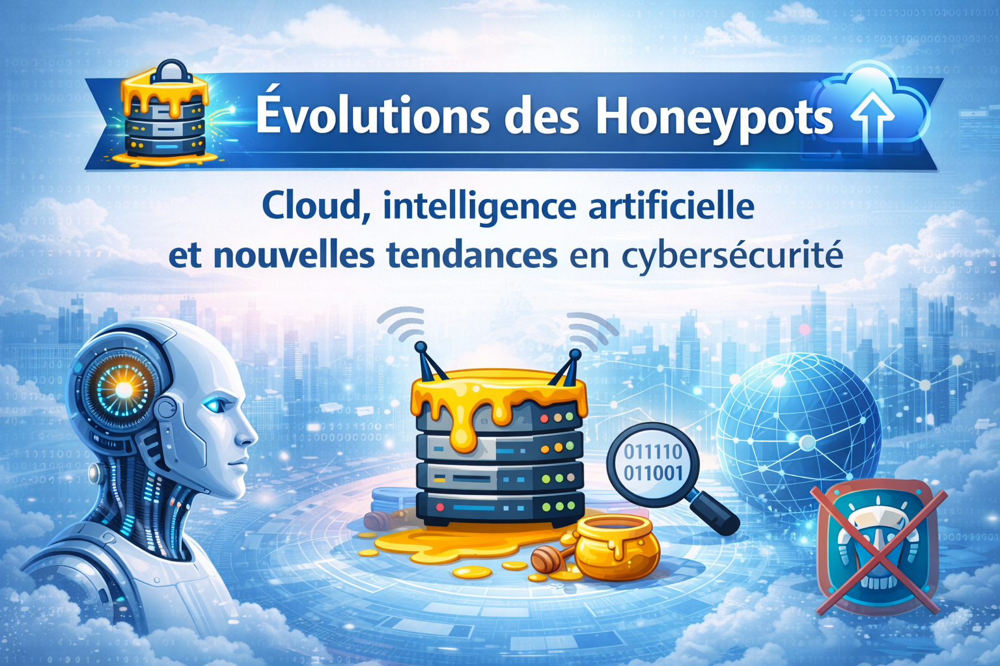

À propos

Étudiant au Lycée Jean Mermoz Montpellier
Étudiant en BTS SIO option SISR au sein du Lycée Jean Mermoz Montpellier, j'ai réalisé deux stages chez SPIE CityNetworks en administration systèmes & réseaux et en déploiement terrain. Trilingue natif français/italien, C1 anglais, je combine une formation technique solide avec une ouverture internationale et une forte appétence pour la Cybersécurité, l'Intelligence Artificielle et la Data Science.
- Formation : BTS SIO option SISR
- École : Lycée Jean Mermoz Montpellier
- Localisation : Montpellier / Lyon / Paris
- Disponibilité : Dès Septembre 2026
- Email : zyadmtkl@gmail.com
- Tél : 07 81 92 71 11
- Langues: Français & Italien natif · Anglais C1 · Espagnol B1/B2 · Arabe Courant
- Contrat : Stage / Alternance

Stage 1ère année - Admin IT Réseaux & Systèmes
Voir le siteSPIE CityNetworks est un acteur majeur des réseaux de communication, de l'énergie et des services aux collectivités en France. Stage de 1ère année (mai–août 2025) en tant qu' Administrateur Réseaux & Systèmes sur des sites sensibles (mairies, commissariats) en Paris & Île-de-France.
Baies 19" déployées et câblées sur site
Incidents N1/N2 résolus sur site
Sites institutionnels (mairies, commissariats)
Caméras IP/CCTV installées et configurées
Stage 2ème année - Technicien Terrain CFO/CFA
Voir le siteSPIE CityNetworks — Stage de 2ème année (mars–avril 2026) en tant que Technicien Terrain en Île-de-France. Déploiement d'infrastructure réseau sur chantiers : tirage de câbles fibre optique et Cat6, installation de systèmes de vidéosurveillance IP, switches PoE et NVR, configuration de switches managés.
Mètres de câbles fibre & Cat6 tirés
Caméras IP installées avec NVR
Switches PoE configurés et intégrés
Chantiers en Île-de-France
Mon CV
Étudiant en BTS SIO SISR passionné par l'administration systèmes & réseaux, la cybersécurité et l'intelligence artificielle. Rigoureux, polyvalent et toujours en quête de nouvelles compétences, je cherche à évoluer dans un environnement technique stimulant.
Résumé
Zyad MOUTAOUAKIL
Étudiant BTS SIO SISR · Admin Systèmes & Réseaux · Passionné IA & Cybersécurité
- Baccalauréat Général Binational Franco-Italien — Lycée Stendhal, Milan (2023)
- BTS SIO SISR au Lycée Jean Mermoz Montpellier (2024–2026)
- 2 stages chez SPIE CityNetworks (Paris / Île-de-France)
Formation
BTS SIO — Option SISR
2024 – 2026
Lycée Jean Mermoz — Montpellier
Formation aux métiers de l'administration systèmes, réseaux et cybersécurité en entreprise. Virtualisation, AD/DNS/DHCP, GPO, VLAN, supervision réseau.
Baccalauréat Général Binational Franco-Italien
2020 – 2023
Lycée Stendhal — Milan, Italie
Diplôme binational délivré conjointement par l'Éducation Nationale française et le MIUR italien. Spécialités Sciences Économiques et Sociales & LLCER Anglais.
Langues
- 🇫🇷 Français — Bilingue natif
- 🇮🇹 Italien — Bilingue natif
- 🇬🇧 Anglais — C1
- 🇪🇸 Espagnol — B1/B2
- 🇲🇦 Arabe — Courant & Dialectal
Expérience Professionnelle
SPIE CityNetworks — Admin Réseaux & Systèmes
Mai – Août 2025
Paris & Île-de-France · Stage 1ère année
- Déploiement d'infra réseau (switches, routeurs, baies 19") sur sites sensibles
- Admin Linux/Windows Server : Active Directory, DNS/DHCP, GPO, gestion accès
- Résolution d'incidents N1/N2 sur site : pannes matérielles, dépannage réseau
- Déploiement systèmes vidéosurveillance IP/CCTV et câblage baies serveurs
SPIE CityNetworks — Technicien Terrain CFO/CFA
Mars – Avril 2026
Île-de-France · Stage 2ème année
- Tirage et raccordement câbles fibre optique et réseau Cat6 sur chantiers
- Installation systèmes vidéosurveillance IP, switches PoE, NVR
- Configuration de switches managés avec les chefs de chantier
LEXANT Milano — IT Assistant & Junior Data Analyst
Sep 2023 – Juin 2024
Milan, Italie · Hybride CDI
- Gestion et sécurisation des bases de données clients d'un cabinet juridique (RGPD)
- Support technique N1/N2/N3 : diagnostics, config postes, résolution incidents
WebTour MAROC DMC — Assist. Communication & CRM
Fév 2023 – Présent
Remote · Freelance
- Gestion campagnes digitales tourisme Maroc (marchés France & Italie)
- Exploitation CRM pour personnalisation des expériences clients
Projets
Passionné d'informatique, je travaille sur des projets concrets mêlant administration réseaux, cybersécurité et intelligence artificielle. Ces expériences enrichissent ma vision technique et me permettent d'apporter des solutions innovantes en contexte professionnel.
- Stage 1ère année
- Stage 2ème année
- Projets


{kind=link}
{kind=link}
{kind=link}
{kind=link}
{kind=link}
Engagement Étudiant — Domissori Montpellier
Voir le siteEn parallèle de mon BTS SIO, je suis accompagnant scolaire chez Domissori Montpellier pour collégiens et lycéens. Bien plus qu'un job étudiant, cet engagement allie flexibilité, épanouissement personnel et impact concret auprès des familles et des jeunes — l'occasion de grandir tout en aidant d'autres à réussir.

Mission
Accompagnant scolaire à domicile pour collégiens & lycéens
Public
Élèves de collège et lycée — soutien, baby-sitting et animation
Certifications
BAFA & certification Montessori
Compétences
Patience, écoute active, vulgarisation, adaptabilité, pédagogie
Veille Technologique
Dans le cadre de ma formation
BTS SIO option SISR, je réalise une veille
technologique axée sur les honeypots (pots de
miel). Ces systèmes permettent d'analyser les cyberattaques et de
renforcer la sécurité des infrastructures réseau.

Qu'est-ce qu'un honeypot ?
Système leurre conçu pour attirer et analyser les attaques informatiques.
En savoir plus
Types de honeypots
Honeypots à faible, moyenne et forte interaction : usages et différences.
En savoir plusHoneypots & Cybersécurité
Intégration en entreprise : avantages, limites et bonnes pratiques.
En savoir plus
Évolutions des honeypots
Cloud, intelligence artificielle et nouvelles tendances en cybersécurité.
En savoir plusTémoignages
Retours de tuteurs et collègues rencontrés lors de mes expériences professionnelles.
Contact
N'hésitez pas à me contacter pour discuter de vos projets, d'opportunités de stage ou d'alternance. Je suis disponible et réactif !
Localisation :
Montpellier / Lyon / Paris
Email :
zyadmtkl@gmail.com
Téléphone :
07 81 92 71 11